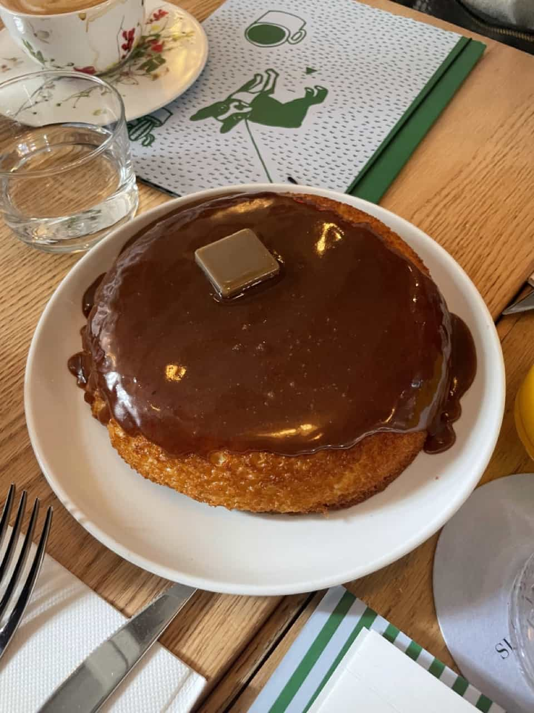

Sunday in Brooklyn
348 Wythe Ave, Brooklyn, NY 11249
Favorites:
Sunday Pancakes (pictured), Shakshuka, Egg and Cheese Sandwich
Sunday in Brooklyn has the best brunch in town. Try their trademarked Sunday Pancakes, a decadent, cake-like twist on a classic. Anything on the menu is destined to delight.